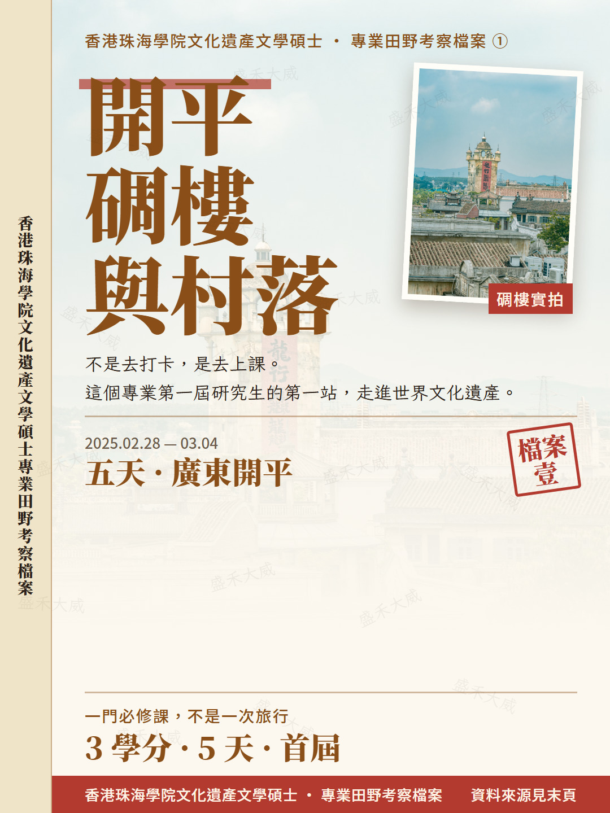

開平碉樓與村落
首屆必修田野考察 · 廣東開平｜首屆 MACH 的 3 學分必修田野考察
把往屆田野考察從頭扒了一遍，第一站是世界文化遺產開平碉樓與村落。這不是打卡，是六門必修之一、3 學分的田野考察課。…
入学前把公开可查的往届考察从头扒了一遍，做成三组图文。三次性质并不相同，别混为一谈。

首屆必修田野考察 · 廣東開平｜首屆 MACH 的 3 學分必修田野考察
把往屆田野考察從頭扒了一遍，第一站是世界文化遺產開平碉樓與村落。這不是打卡，是六門必修之一、3 學分的田野考察課。…

泉州 · 廈門非遺探索之旅｜學院主辦、基金會贊助的跨專業項目
第二站是泉州與廈門。先說清楚：這一趟是學院主辦、香港廈門聯誼總會慈善公益基金會贊助的跨專業非遺探索之旅，不是香港珠海學院文化遺產文學碩士單獨的必修田野考察。…

雲南 · 貴州非遺考察之旅｜學院主辦、惠明慈善基金贊助的師生考察團
三篇的最後一站：22 人師生團五天跨越滇黔兩省，從雲南民族村的打鐵做刀、丹寨的蠟刀作畫，一路走到平塘的「中國天眼」。官網把它定性為「一次專業學科的延伸」。…
首页 › 文化遗产 › 香港学习 › 田野考察档案 › 单篇。每篇文章页顶部都有逐级面包屑，页尾有上一篇／下一篇与返回入口。